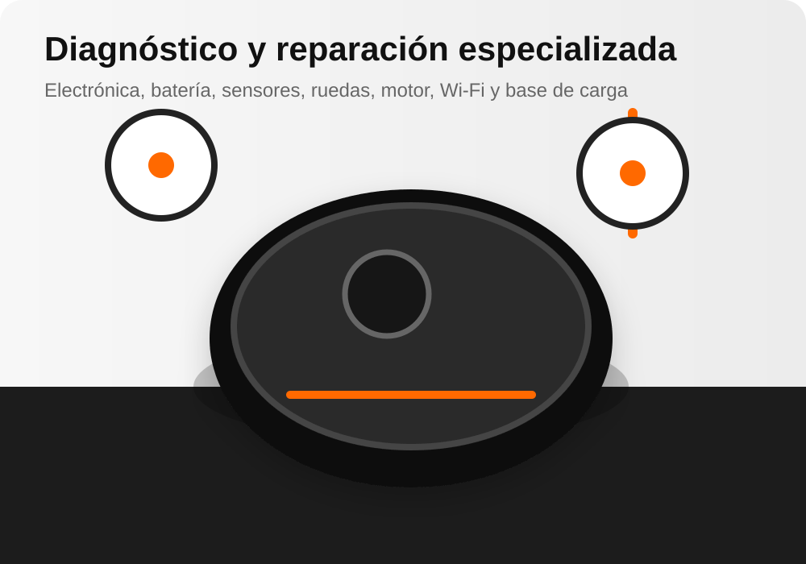

Diagnóstico técnico
Localizamos el origen de la avería antes de presupuestar.
Revisamos averías de carga, batería, sensores, navegación, motores, ruedas, cepillos, Wi‑Fi, mapas y bases de autovaciado en robots de limpieza Xiaomi.
Diagnóstico: 20 € + IVA. No somos servicio técnico oficial Xiaomi y no tramitamos equipos en garantía.

Localizamos el origen de la avería antes de presupuestar.
Intervenciones en electrónica, mecánica, carga y navegación.
Garantía sobre la reparación realizada según condiciones del servicio.
Servicio de transporte para clientes que no pueden acudir al taller.
Una web centrada en las búsquedas que realmente hacen los clientes cuando su robot Xiaomi deja de limpiar, cargar o navegar correctamente.
Revisión de batería, conectores, contactos, placa de carga, cargador y base cuando el robot no enciende o no carga.
Consultar reparación →Diagnóstico de sensores, lidar, ruedas, errores de posicionamiento, navegación errática y problemas para volver a la base.
Consultar reparación →Reparación de pérdida de potencia, ruidos, bloqueo de cepillos, rueda central, ruedas laterales y motor de aspiración.
Consultar reparación →Ayuda técnica cuando el robot no conecta, pierde el mapa, falla la aplicación, no actualiza o presenta errores de configuración.
Consultar reparación →Revisión de bomba, depósito, válvulas, mopa y sistemas de dosificación en robots aspiradores con función de fregado.
Consultar reparación →Comprobación de alimentación, contactos, aspiración, sensores y comunicación entre el robot y su estación de carga.
Consultar reparación →
Estas son algunas de las incidencias más habituales que revisamos en robots aspiradores Xiaomi y equipos de limpieza conectados.
Trabajamos con distintas generaciones y familias de robots aspiradores Xiaomi. Indícanos el modelo exacto para confirmar la reparación y disponibilidad de repuestos.
Disponemos de servicio de recogida y devolución para Península. Antes de solicitarlo, contacta con nosotros para confirmar condiciones, coste y embalaje adecuado del robot aspirador.
C. de Joaquín María López, 26 · 28015 Madrid

Cuéntanos el modelo y el fallo por teléfono, WhatsApp o formulario.
Revisamos el robot en taller para localizar la avería.
Te informamos del coste antes de realizar la reparación.
Con tu aceptación, efectuamos la reparación y las pruebas finales.
Indica el modelo exacto y describe la avería. El formulario abrirá tu aplicación de correo con los datos preparados para enviarlos a soporte@kelatos.com.
El diagnóstico tiene un coste de 20 € + IVA. Después de revisar el equipo, se informa del presupuesto antes de reparar.
Sí. Revisamos la base, contactos de carga, batería, sensores, ruedas, navegación y otros componentes relacionados.
Sí, existe servicio de recogida y entrega para Península. Contacta antes para confirmar condiciones, coste y forma de embalaje.
No. XiaoTech es un servicio técnico independiente. No gestionamos garantías del fabricante ni equipos cubiertos por garantía oficial.
El modelo exacto, una descripción clara del fallo, errores que aparezcan y un teléfono de contacto. Si el robot tiene base, indica también el modelo de la estación.
Desde nuestro taller en Chamberí atendemos clientes de Madrid capital y zonas cercanas como Moncloa, Argüelles, Tetuán, Chamartín, Salamanca y otros distritos. Si buscas un servicio técnico para reparar un robot aspirador Xiaomi que no carga, no navega, no vuelve a la base, pierde el mapa o presenta fallos de batería, sensores, ruedas o motor, puedes traer el equipo directamente o consultar el servicio de recogida.